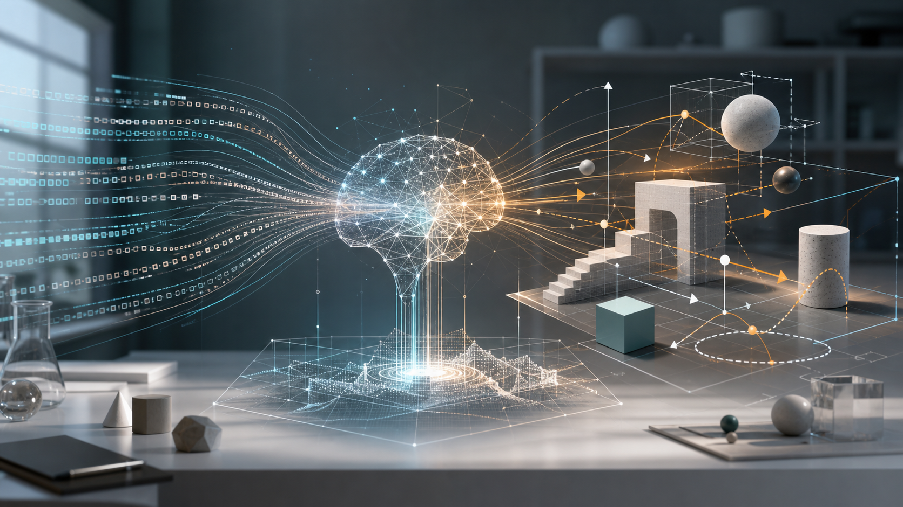
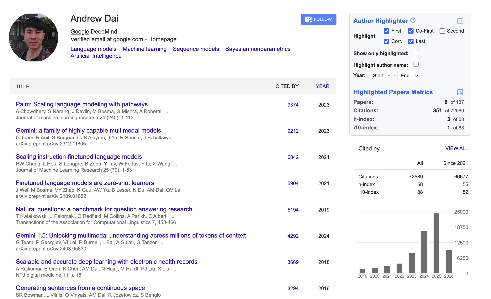
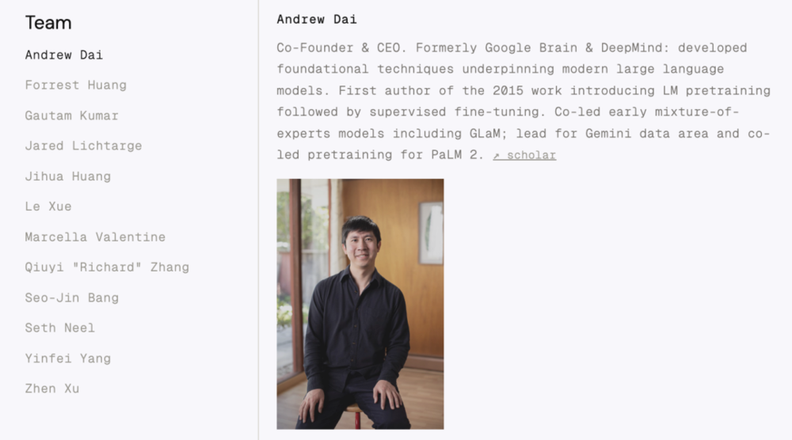
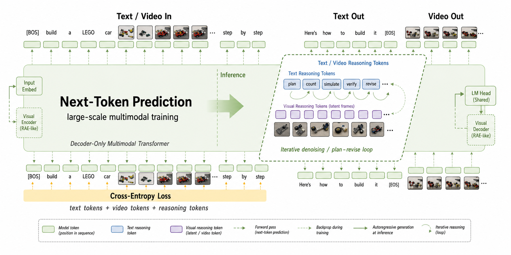

AI
Silicon Valley Has No Secrets. It Has Heretics.
Notes from Andrew Dai’s May 2026 interview.

YouTube source: Google AI’s 14 years, Gemini’s comeback, and visual understanding models: an interview with former DeepMind core scientist Andrew Dai
Transcript in Chinese: Sina Finance repost / Huxiu repost
Andrew Dai Google Scholar: scholar.google.com/citations?user=2r2NuDAAAAAJ

Who is Andrew Dai?
Andrew Dai is the founder of Elorian AI and a former core scientist inside Google’s AI ecosystem. He moved to Silicon Valley in 2012 to join Google Brain and stayed at Google for nearly 14 years. In that time, his work passed through an unusually large slice of modern AI history: sequence learning, language-model pretraining, text generation, adversarial training, RL after pretraining, MoE, PaLM, Flan, Gemini, multimodality, long context, and the unglamorous but decisive craft of data.
His collaborators include Quoc Le, Ian Goodfellow, Liam Fedus, Noam Shazeer, and Jeff Dean. His career reads almost like a chronology of Google’s large-model era: Google Brain, Google Health, GLaM, PaLM, Flan, Gemini, and then Elorian.
So this is not someone rage-quitting from the sidelines. He was inside the machine.
After Gemini, he left to start Elorian AI, a new lab focused on language + visual reasoning. Elorian announced a $55 million round at a $300 million valuation, with backers including Menlo Ventures, Altimeter Capital, Nvidia, and Jeff Dean as an individual investor.

The thesis
Andrew Dai did not leave Google because Google was bad at AI. Google’s record points in the opposite direction. It invented the Transformer, built much of the infrastructure modern AI still runs on, and housed two of the strongest AI cultures in the world: Google Brain and DeepMind.
The more interesting lesson is that being early is not enough. You can have the research insight, the talent, the infrastructure, the data, and the compute, and still miss the moment when an idea becomes a product category.
In AI, timing is a technical variable. Move too slowly and an excellent model becomes a catch-up model. Spread ownership too widely and a sharp research direction becomes a negotiation. That is the deeper story behind this interview: not that Google lacked intelligence, but that big labs pay taxes that small labs sometimes avoid.
The pre-GPT moment Google missed
One of the strangest details in Andrew’s story is how close Google came to the GPT recipe before GPT became the center of the industry.
In 2015, Andrew Dai and Quoc Le worked on semi-supervised sequence learning. The accidental discovery was simple and enormous: train a language model first, then fine-tune it on supervised downstream tasks. In hindsight, this looks like the pretraining + fine-tuning pattern that later became one of the foundations of large language models.
When the Transformer arrived in 2017, Andrew immediately saw that it should be combined with that pretraining idea. He suggested trying it. But Google did not turn that combination into its defining product. OpenAI did.
This is the first recurring pattern in the interview: the idea was not hidden. The ingredients were visible. But the organization did not concentrate belief, compute, and product urgency around the direction early enough.
Google’s real bottleneck was not IQ
Google Brain and DeepMind were both extraordinary labs, but they were not the same institution in spirit. Brain was closer to Google’s product surface. DeepMind kept more of the independent research-lab identity it had before the acquisition. That difference mattered.
When teams from both sides needed to collaborate, the technical question could quickly become an organizational question. Who leads? Who owns the model? Who owns the data? Which roadmap wins? Which team gets credit?
That sounds like corporate trivia until you are racing a frontier model. Then it becomes a tax on speed. The model does not care which org chart produced the data. The benchmark does not care who got the promotion packet. The market definitely does not care.
But internally, ownership matters. Score matters. Visibility matters. And when everyone needs a score, even good ideas pay an organizational toll before they move.
Sometimes the bottleneck is not architecture, compute, or talent.
Sometimes the bottleneck is who gets credit.
Data, MoE, PaLM, Flan, Gemini
Andrew’s career also complicates the simplistic story that AI progress is just architecture plus compute. Again and again, the interview returns to data.
After GPT-3, Google Brain felt pressure to prove it could build a better model. Andrew moved back from Google Health because he believed the problem was not only model size; it was data. That work led into GLaM, a mixture-of-experts model that combined MoE with pretraining and fine-tuning. The goal was not just to make a giant model, but to make inference cheaper by activating only part of the model at a time.
The same theme shows up later in Gemini. Gemini 1.0 was rushed and used a dense architecture. Gemini 1.5 finally brought MoE into the Gemini line. Gemini 2.0’s gains came heavily from data: better filtering, better synthetic data, and better selection. Gemini 3 continued that data-side innovation and briefly put Google back in front.
The synthetic-data detail is especially important. Synthetic data is not magic extra food for the model. Used badly, it poisons the model with its own artifacts. If the synthetic corpus overuses a word like “delve,” the trained model learns to overuse “delve.” If the synthetic data contains bad math, the model’s math gets worse. Used well, Andrew’s comparison was blunt: it can help produce something as strong as GPT-5. Used poorly, it teaches the model a fake distribution and then makes that fake distribution feel natural.
That is why Andrew’s departure after Gemini matters. He did not leave because the project had obviously failed. He left after Google had recovered momentum. The problem was different: in a project with thousands of people and huge pretraining runs, radical data changes become risky. The bigger the run, the harder it is to try something truly aggressive.
Gemini 3 made another jump through data-method innovation, but that was also the moment the ceiling became visible. When thousands of people are attached to a project and the pretraining run burns enormous GPU time, the organization naturally becomes conservative. You can improve the recipe, but you cannot easily gamble the whole kitchen.
Research taste is underrated
Top researchers are not separated only by technical execution. At the frontier, everyone is smart. Everyone can read the papers. Everyone knows the obvious scaling arguments. These days, everyone can also spin up coding agents and implement ideas faster than before.
The scarce thing is research taste: knowing which direction deserves years, which idea is too early, which idea looks silly now but inevitable later, when to keep pushing, and when to quit.
The Noam Shazeer anecdote is a good example of that kind of taste. Andrew describes discussing a Transformer architecture change with Noam and asking whether adding a connection would help. Noam did not need to run the model. He could look at the code and say no, because the gradient would move from one path to another. That is not just literature knowledge. It is an internal simulator for how models train.
Andrew traces much of his taste to Geoffrey Hinton’s influence: build AI by paying attention to how brains actually learn. A newborn model knows nothing. It learns from data. A human child learns the world through sight and touch before language. That does not prove Elorian’s thesis, but it explains why the thesis feels natural to him.
The value of ideas also changes when execution becomes easier. Coding agents make experiments cheaper to implement. That makes genuinely creative researchers more valuable, not less. If everyone can try a mediocre idea quickly, the scarce resource becomes the idea worth trying.
The three bets on AGI: LLM, World Model, and Elorian’s Bet
The interview also clarifies why visual reasoning is not simply “world models with more video.” Andrew divides the field into three broad intuitions.
The first camp believes language-model reasoning will keep scaling. Longer chains of thought, stronger coding models, and recursive self-improvement eventually lead to AGI. This is where much of the frontier-lab pressure currently sits because coding is commercially valuable and strategically urgent.
The second camp believes world models are the key. This camp often comes from computer vision. The intuition is that humans and animals are intelligent because they understand the visual and physical world. But visual world models alone do not naturally connect to the human-made conceptual systems that matter in science, engineering, law, mathematics, and medicine.
Elorian’s bet is the middle route: language reasoning plus visual reasoning. Not just text. Not just pixels. A system that can reason about physical reality while also using the abstractions humans invented to explain and redesign that reality.
That is why “visual AGI” is a cleaner phrase than AGI here. The benchmark is not metaphysical. It is mundane: can a model handle the basic visual tasks humans handle without thinking? Use a steering wheel. Tie shoes. Build Lego. Assemble Ikea furniture. Understand a moving scene. Track objects. Interpret affordances. If a model can do those things robustly, AGI starts to look much less far away.
Why now?
Andrew’s timing is also a bet on where the large labs are looking. OpenAI, DeepMind, Anthropic, and others are under intense pressure to win coding because coding models are a market, a benchmark, and a possible path to recursive self-improvement. Nobody wants to be second if coding becomes the self-improvement loop.
That creates space. If the biggest labs are pulled toward coding, a focused team can spend its entire attention on multimodal visual reasoning. Elorian wants to be that focused team.
It is still a risky bet. World models may need their own Transformer moment. Specialist multimodal reasoning may not beat generalist models fast enough. The market may reward coding agents before it rewards visual reasoning agents. But the bet is coherent: if the next intelligence gap is grounded visual reasoning, a lab designed around that gap has a chance to matter.
My takeaway
The line I keep coming back to is this:
Silicon Valley has no secrets. Scientists talk. But it does have scientists who believe in different futures.
The ideas circulate. The papers circulate. The talent circulates. Everyone knows roughly what everyone else is trying.
But not everyone believes the same thing.
Some believe scaling language models gets us there. Some believe intelligence needs world models. Some believe the missing piece is the fusion of language reasoning and visual reasoning.
Andrew Dai left one of the strongest AI labs in the world because he believes the next important path may not be just text reasoning.
My own guess is that Elorian is aiming at something closer to MLLM-Omni: text and video tokens in, text and video tokens out, with reasoning tokens in both text and video space. That is different from most current VLMs, where text/video go in but text comes out, and also different from video generators, where text/video go in and video comes out. The missing piece is a model that can reason in both modalities, not merely translate one modality into the other.
Qwen-like VLM: text/video in, text out.
Gemini-Omni or Veo-like generation: text/video in, video out.
Elorian-style guess: text/video in, text/video out, with reasoning tokens in both text and video.
Why Elorian is not just a bigger Qwen: Qwen-VL, Gemini, GPT-4-class models, and Claude-style systems can already take text and visual inputs, but most of the useful output is still text. What Elorian seems to believe is that visual reasoning should not be a side feature attached to a text model. My personal guess is that they are building toward text/visual in, text/visual out, with chain-of-thought reasoning tokens in both text and visual space. The whole stack, from data and pretraining to architecture, RL, post-training, inference, and vision encoders, would then have to point at multimodal reasoning.
A generalist model has to be good at everything: chat, code, math, translation, OCR, document understanding, browsing, tool use, image understanding, and video understanding. A specialist model can throw away some of that burden. If “who won World War II?” does not help multimodal reasoning, you can reduce that kind of data and spend more budget on images, video, spatial layouts, physical dynamics, and visual problem solving.
Video generation alone is not visual reasoning. A video model can paint plausible motion without understanding the constraints behind it. Visual reasoning means tracking objects through time, inferring hidden state, respecting physical constraints, and choosing the next action. The difference is not whether pixels come out; it is whether the model can use those pixels as part of a reasoning process.
Architecturally, my guess looks something like this: a decoder-only Transformer as the causal backbone, a RAE-like visual representation space for video, and a single multimodal token stream where text tokens, video tokens, and reasoning tokens all coexist. RAE here means something like a representation autoencoder: a compressed visual latent space rich enough to reason over, not just pixels to decode. The chain of thought would not have to be purely textual. It could contain text reasoning tokens and latent video reasoning tokens before the model emits both written instructions and generated video steps.

So the deeper product will not look like “Qwen, but larger.” It will look more like an omni multimodal model where text and video are both input, both output, and both part of the reasoning trace. The model will not only describe a scene or generate a clip. It will reason through visual states, revise them, and connect them back to language.
A concrete example: give the model a picture of a LEGO car, or a goal page like this LEGO car guide. A normal VLM can describe the image or summarize the instructions. A visual-reasoning model should do more: infer the parts, understand the assembly order, generate a step-by-step build video, and add synchronized text instructions. The same kind of capability applies to tying shoes, using a steering wheel, building Lego, or assembling Ikea furniture. These are basic human visual tasks, but they require spatial reasoning, temporal reasoning, object permanence, and action planning.
That is why the “text/video in, text/video out” idea matters. The output should not be only an answer. It should be an executable visual explanation: a sequence of states the model can reason through, correct, and explain.
That is the sense in which “heretic” feels useful here. Not as an insult, and not as theater, but as a way to describe someone willing to depart from the dominant belief system before consensus gives permission.
Maybe Andrew is right. Maybe he is early. Maybe he is wrong. Maybe the generalist models will swallow the specialist path. But that is what makes the bet worth watching: not a secret, but a conviction that diverges from the room.
Key Conversation Notes
Paraphrased in English, organized by topic rather than as a line-by-line transcript.
1. Elorian’s team and ambition
- Elorian has a small research-heavy team, roughly in the mid-teens, with plans to grow toward 50 to 70 people over the next two years.
- The company is building a specialist lab around multimodal visual reasoning, not a generic chatbot.
- The commercial plan is to offer an API that helps companies solve visual problems, while the long-term research goal is visual AGI.
2. Andrew’s path into Google
- Andrew was born in China, grew up in the UK, studied at Cambridge, earned a PhD in Edinburgh, and moved to Silicon Valley in 2012 to join Google Brain.
- He originally expected to stay in Silicon Valley for a few years and then start a company. He stayed at Google for nearly 14 years.
- His first Google work included product-facing systems such as Google Now, where he learned end-to-end engineering and product constraints before returning to deeper AI research.
3. Google Brain, DeepMind, and two research cultures
- Hinton’s arrival made deep learning more central to Google’s identity.
- DeepMind entered Google with a much more independent research-lab structure, while Google Brain was closer to product deployment.
- Collaboration between Brain and DeepMind was possible, but ownership and credit assignment made cross-lab work harder than outsiders might assume.
4. Semi-supervised sequence learning and the missed GPT recipe
- Andrew and Quoc Le’s 2015 work discovered the pattern of language-model pretraining followed by supervised fine-tuning.
- When the Transformer appeared in 2017, Andrew saw that it could combine naturally with that pretraining recipe.
- Google did not push that combination into the defining product path. OpenAI, especially Alec Radford’s GPT work, did.
- Google only fully updated its belief after GPT-3 showed that scaling language models could produce startling capabilities.
5. Google Health, MaskGAN, RL, and early post-training ideas
- Andrew moved into Google Health when Google wanted to bring AI into medical products.
- His health work involved using medical records to predict future illness, medication needs, and hospital costs.
- MaskGAN, with Liam Fedus and Ian Goodfellow, explored infilling and using RL after pretraining, an idea that later became much more central to language-model training.
6. MoE, GLaM, PaLM, Flan, and data
- After GPT-3, Google Brain felt pressure to build a stronger model.
- Andrew believed the gap was not only model size but data quality.
- GLaM used a mixture-of-experts approach to make large models more efficient by activating only part of the model per request.
- PaLM and Flan were part of Google’s push back toward frontier LLMs, but timing mattered: a strong model released late can become invisible in the market narrative.
7. Gemini’s comeback and why Andrew left
- After ChatGPT, Google entered emergency mode and merged Brain and DeepMind into the Gemini effort.
- The joint leadership structure made coordination difficult at first, and the early Gemini work was slowed by organizational complexity.
- Noam Shazeer’s return helped Gemini 2.5, and Andrew describes Shazeer as someone with unusually strong model intuition.
- Gemini’s later gains came heavily from data: higher-quality filtering, synthetic data, and data-method innovation.
- Synthetic data was a central theme: used well, Andrew compared it to the kind of ingredient that can help produce a GPT-5-level model; used badly, it teaches artifacts, repeated phrases, and even wrong math.
- Andrew gave the example of synthetic data overusing words like “delve,” which can make the trained model overuse the same word.
- Andrew left because a massive Google project could not easily try the bolder, riskier data changes he wanted to pursue.
- Gemini 3 continued to improve through data methods, but the project’s scale made radical experiments harder: thousands of people, huge GPU runs, and too much downside if an aggressive new recipe failed.
- Noam Shazeer’s model intuition came through in an architecture anecdote: he could look at a proposed Transformer connection and predict how the gradient would move without running the experiment.
8. Elorian’s technical route
- Elorian is taking a full-stack approach: data, architecture, RL, post-training, inference, and vision encoders all optimized around multimodal reasoning.
- The company is closer to a specialist lab than a generalist model company.
- The core claim is that a specialist model can beat a generalist model inside the domain it is designed for.
- The specialist logic is to remove or reduce data that does not help multimodal reasoning, then spend more capacity on images, video, spatial layouts, and visual problem solving.
- Andrew compared this to Anthropic’s focus on coding: the whole stack can be stronger when every component points at the same target.
9. Video generation alone is not visual reasoning
- Sora, Veo, and other visual generation systems can produce beautiful motion, but beautiful motion does not by itself prove visual reasoning.
- Understanding means the model grasps what is happening, not just what looks plausible.
- Reasoning means the model can use structure, constraints, and relationships to decide what follows, what is impossible, or what action should be taken.
- The key test is whether pixels become part of the reasoning process, not merely the output format.
10. Language models, world models, and the middle path
- The language-model camp believes longer and stronger chains of thought will eventually lead to AGI.
- Andrew is skeptical that scaling language-only chains of thought is enough, because current models still hallucinate on simple visual tasks such as counting cups on a table.
- The world-model camp believes visual and physical prediction are central to intelligence.
- The world-model camp often comes from computer vision. Andrew connects it to researchers such as Fei-Fei Li and Yann LeCun, and to an academic culture that prizes novelty.
- Andrew thinks vision alone is not enough because human knowledge systems such as mathematics, physics, chemistry, and law are conceptual and language-mediated.
- Elorian’s path is to combine visual reasoning with language reasoning.
- My guess: the target is closer to MLLM-Omni, with text/video tokens in, text/video tokens out, and reasoning tokens in both text and video space.
11. Visual AGI
- Andrew prefers the phrase visual AGI because the definition is more concrete than AGI.
- A visually intelligent system should handle basic human visual tasks: using objects, tying shoes, assembling furniture, tracking motion, understanding affordances, and interpreting scenes.
- A concrete product example would be a model that sees a LEGO car goal image and generates both a step-by-step assembly video and synchronized written instructions.
- Current models still fail too often on these everyday visual tasks.
12. Research taste, talent, and the neolab window
- Andrew argues that the most important research resource is time. Compute matters, but time spent on the wrong direction does not come back.
- His research taste was shaped partly by Hinton’s belief that AI should learn in ways that rhyme with human cognition.
- Jeff Dean served as an important model of hands-on technical depth.
- Creative researchers become more valuable as coding agents make implementation easier.
- The current neolab startup window may last another year or two, but it will not stay open forever.
Enjoyed this post? Send it to your email to read later.